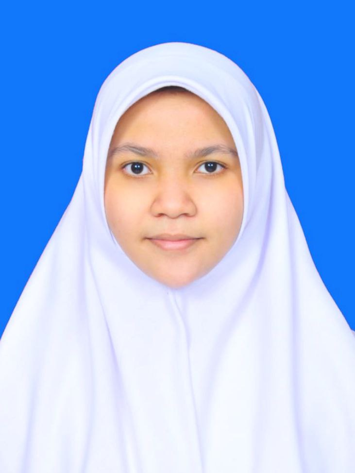

<!DOCTYPE html>
<html lang="en"></html>
<head>
    <meta charset="UTF-8">
    <meta http-equiv="X-UA-Compatible" content="IE=edge">
    <meta name="viewport" content="width=device-width, initial-scale=1.0">
    <title>CV Maryam Hasnaa' Syamila</title>
</head>
<body bgcolor="#D5DBDB" text="black"> 
    <h1 style="text-align:center"><b>CURRICULUM VITAE</b></h1>
    <hr width="400" size="3" align="center" noshade/>
    <h4 style="text-align:center"><b><span style="color:#940C0C">Maryam Hasnaa' Syamila - TI03 Teknik Informatika 2022</span></b></h4>
    <p style="text-align:center"></p>
    <p style="text-align:center"><a href="https://github.com/maryamhasnaasyamila" target="display">GitHub Saya</a> | <a href="https://www.linkedin.com/in/maryam-hasnaa-syamila-673853251/" target="display">Linkedin Saya</a></p>
     <br>
    <h2>Data Pribadi</h2> 
        <ol type="number">
            <li>Nama                     : Maryam Hasnaa' Syamila</li>
            <li>Jenis kelamin            : Perempuan</li>
            <li>Tempat, tanggal lahir    : Jakarta, 8 Desember 2004</li>
            <li>Kewarganegaraan          : Indonesia</li>
            <li>Agama                    : Islam</li>
            <li>Alamat                   : Jalan Tarumanegara 3 Blok P12 RT 03/RW 17, Tugu Cimanggis Depok Jawa Barat, ID 16451</li>            
            <li>Nomor HP                 : 081384341442</li>
            <li>E-mail                   : <a href="mailto:hasyamil4@gmail.com?subject=Hello%20again">hasyamil4@gmail.com</a></li>
        </ol>
    <br>
    <h2>Riwayat Pendidikan</h2>
        <h3> <ul><li>Pendidikan Formal</li></ul></h3>
             <dt><dd>2010 - 2016 : SDIT Pondok Duta</dd></dt>
             <dt><dd>2016 - 2019 : MTSN 4 Jakarta</dd></dt>
             <dt><dd>2019 - 2022 : MAN 14 Jakarta</dd></dt>
             <dt><dd>2022 - Sekarang : S1 Teknik Informatika STT-NF</dd></dt>
        <h3><ul><li>Pendidikan Non Formal</li></ul></h3>
             <dt><dd>2022 - Sekarang : Kursus Private Bahasa Inggris dan Bahasa Korea di <a href="https://id.duolingo.com/" target="display"><span style="color:#0C9223">Platform Duolingo</span></a></dd></dt>
             <dt><dd>2022 - Sekarang : Kursus Belajar Coding di <a href="https://progate.com/" target="display"><span style="color:#670CA2">Platform Progate</span></a></dd></dt>
    <br>
    <h2>Keahlian</h2>
        <ul>
            <li>Keahlian Editing dan Mendesain (Inshot, Canva)</li>
            <li>Keahlian Menggunakan Internet</li>
            <li>Keahlian Menggunakan Mobile Device dan Laptop</li>
            <li>Keahlian Menguasai Microsoft Office</li>
            <li>Keahlian Berbahasa Indonesia</li>
            <li>Keahlian Bekerja Secara Kelompok dan Individu</li>
        </ul>
    <br>
    <h2>Pengalaman Kerja</h2>
        <ul>
            <li>2019-2021 : Freelancer sebagai dropshipper barang di Shopee, Twitter, dan Instagram</li>
        </ul>
    <br>
    <h2>Pengalaman Ekskul/Organisasi</h2>
        <ul>
            <li>Seni Tari Tradisional SMP</li>
            <li>PMR (Palang Merah Remaja) Tingkat Madya SMP</li>
            <li>Pramuka Tingkat Penggalang SMP</li>
            <li>Pramuka Tingkat Penegak SMA</li>
            <li>Seni Tari Tradisonal SMA</li>
            <li>Archery Club Tingkat SMA</li>
            <li>KIR (Karya Ilmiah Remaja) SMA</li>
        </ul>
    <br/>
    <h2>Sertifikasi</h2>
        <ul>
            <li><a href="https://drive.google.com/file/d/1dq279CKDk8bKSMVIhW8KTRPC2uZQDNEY/view?usp=drivesdk" target="display"><span style="color:#940C0C">Sertifikasi Penulis</span></a> (Penerbitan Puisi)</li>
        </ul>
</body>

</html>